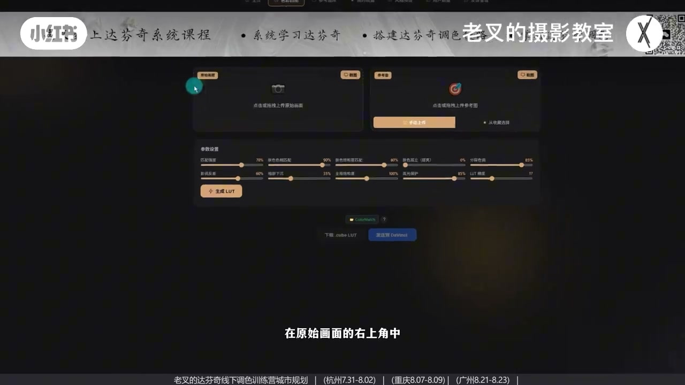
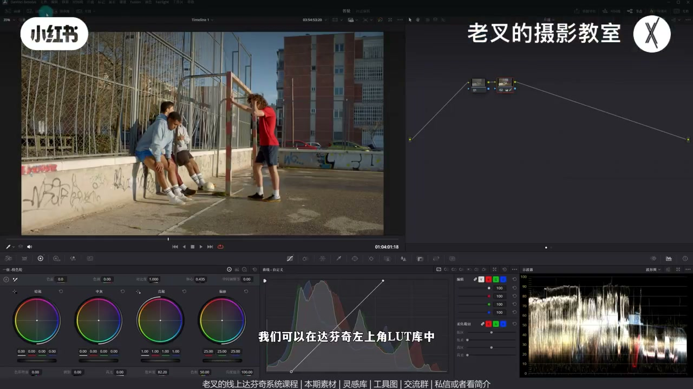
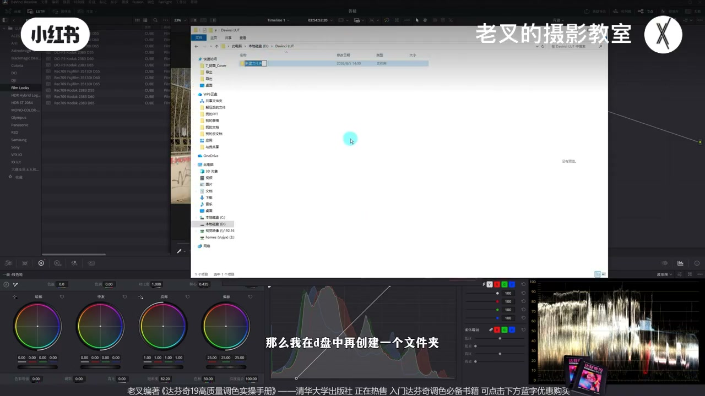
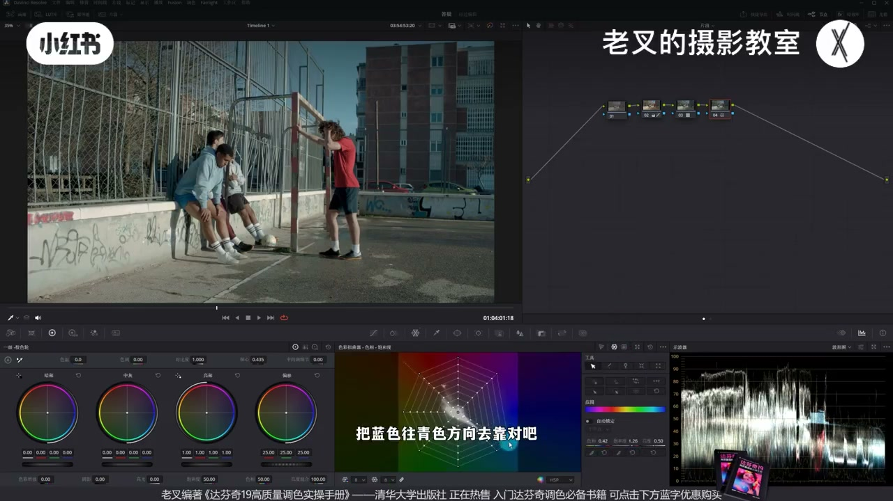

内容要点
老叉把一键创建 LUT 仿色工具升到 3.5：浏览器可直接截取达芬奇窗口省去存图上传，生成后一键发送到本机 LUT 文件夹。Mac 绑定路径即可复用；Windows 若达芬奇装在系统盘，需在偏好设置里新增非系统盘 LUT 位置并重启。拖入节点后可微调色相密度与曝光出片，欢迎把不准的案例发他继续优化。
知识结构
还原后按 P 全屏；Chrome/Edge 用网页截图按钮选达芬奇窗口，省截图保存上传。
网页小按钮绑定 LUT 目录；达芬奇 LUT 库右键「打开文件位置」找大文件夹，做一次可复用。
系统盘网页传不过去→偏好设置·系统·常规加非系统盘 LUT（如 D:\色彩匹配）；首次改路径需重启。
LUT 库刷新→拖到节点；色偏可再靠青、加密度；评论区网址，不准案例可反馈优化。
3.5 版把「截图→生成 LUT→进达芬奇」收成网页直截 + 一键发送；Windows 用户务必把 LUT 库指到非系统盘并重启一次。仿色接近后，再用节点修色偏与曝光即可出片。
00:00-00:413.5 更新：浏览器直截达芬奇画面
几次测试后，一键创建 LUT 仿色效果不错，但旧流程要截图保存、上传、下载 LUT 再进达芬奇，偏麻烦。3.5 版优化流程：先给画面做好还原，按键盘 P 全屏预览，再切到网页；原始画面右上角有截图按钮。
Chrome 或 Edge 可调用系统截图：窗口里选达芬奇，点分享后回到网页即自动截好，省好几步。参考图可本地上传，也可用同样方式对任意窗口截图，再微调参数点生成 LUT。

00:41-01:21一键发送：绑定本机 LUT 文件夹
生成后以前要下载再拖进 LUT 库。现在网页多出一个小按钮，可直接绑定 LUT 所在路径。路径怎么找：达芬奇左上角 LUT 库里任意右键一个 LUT→打开文件位置，找到 LUT 大文件夹，在网页里选到该路径。
只要做一次，不换电脑即可复用。对 Mac 用户通常没问题；Windows 则另有限制。

01:21-02:29Windows：非系统盘 LUT 库 + 重启
若达芬奇默认装在 C 盘（系统盘），网页往往传不过去，需要新增 LUT 库位置：偏好设置→系统→常规下方「LUT 位置」，添加非系统盘路径。他演示在 D 盘建「色彩匹配 / Color Match」文件夹，网页保存目标选该文件夹确认。
之后点「发送给达芬奇」，文件自动进新建文件夹；命名加了时间戳与独立后缀防重名。LUT 库空白处右键刷新即可看到新文件夹与 LUT。若是第一次改偏好设置里的 LUT 位置，保存后务必重启达芬奇。

02:29-03:36拖入节点微调出片，欢迎反馈不准案例
传好后把 LUT 拖到达芬奇节点，可快速得到接近参考图的风格化；颜色可能略偏（例如参考更青而结果偏蓝），可再开节点把蓝往青靠，或增加蓝与青的密度，并适当微调曝光后出片。
网址附评论区；被屏蔽可私信。线下训练营优先测新功能，也有线上系统课。测试已有大几百人；若仿色不准，把原始画面、参考图与套 LUT 后结果发给他，他会按情况继续优化。

完整转录（141段）
以下文本由 Whisper medium 模型自动转录，可能存在少量识别误差，已尽可能修正。
经过几次测试
我们这个一键创建LUT仿色的工具
反射还是不错的
但是流程还是有点麻烦
要先截图保存上传
再下载LUT再传那个达芬奇
所以我们这一次更新优化了这个流程
来到3.5版本
首先是截图
我们可以这样做
先给一个画面做好还原
然后按住键盘上的P键
这时候它会全屏呈现对不对
然后我们再切换到这个网页
在原始画面的右上角中
会有个截图按钮
我们点一下截图按钮
如果你用的是谷歌或者是H浏览器的话
就可以调用这个功能
我们在这个窗口中可以选择达芬奇
那此时点击分享
它会变回到达芬奇这个窗口
我们再回去它就自动截图好了
这可以省好几件事情
然后再传入你想要的一个参考图
这个参考图你可以从本地传
也可以用一样的方式
换取任何窗口去做截图
然后我们再微调参数
点击生成LUT
生成好了LUT中
我们要传递给达芬奇
对不对
之前要先下载
再打开达芬奇的LUT库
再拉进去这个太麻烦了
我们可以在这个位置
我们看到这个地方多出一个小按钮
点击它
你可以用它直接去绑定你的LUT所在位置
那LUT的文件夹在哪呢
我们可以在达芬奇左上角LUT库中
随便右键点开一个LUT
然后选择打开文件位置
那这时候它会弹出它所对应的文件夹
我们可以找到这个LUT的大文件夹
然后把这个路径
在这个网页中选择到它
这个只要做一次
后面只要你不换电脑
它都可以去复用这个行为
这个流程对Mac用户来讲问题不大
但是Windows用户情况就不同了
如果你的达芬奇是默认装在C盘的
因为这个盘是系统盘
网页传递不过去
所以我们需要给它新增一个LUT库的位置
我们可以在达芬奇左上角选择偏好设置
在偏好设置中我们选择系统常规
在常规的下方有一个LUT位置
我们可以给它添加一个非系统盘
任何一个盘都行
佛这里选择的是D盘
那么我在D盘中再创建一个文件夹
给它叫做色彩匹配
然后我们就获得了一个
非系统盘的一个地址
对吧
我们再回到这个网页
将这个保存的目标路径
选择我们刚刚新建的Color Match
这个文件夹点击确认就行了
这时候我们只需要给它把生成好的LUT
点击发送给达芬奇
它就会自动传到我们刚刚新建的文件夹中
这个文件夹的命名我也做了调整
因为我们这一次是自动流程
所以为了避免它出现重名的一个情况
我们会增加了很多时间戳
以及独立的后缀
这时候你不需要做任何事情
我们只需要在这个空白处右键点击刷新
它就会弹出一个新的文件夹
我们刚刚生成的这个LUT也在里面了
那如果说你是第一次修改
这个偏好设置中的LUT位置的话
你在保存好了之后
记得要重启一下达芬奇
那我们传好了这个LUT之后呢
就可以把LUT拖到你的达芬奇中
这样就可以快速给画面带来一种风格化
和我们的参考图其实还是比较接近的
虽然颜色会有一点点偏差
比如说我们这个画面稍微带了点蓝
它是更加的偏青色
我们可以再来个节点
把蓝色往青的方向去靠
对吧
你想怎么动怎么动
我们变成这种青色了之后呢
也可以再来个节点
把蓝色和青色的密度给它增加
那这样呢
我们是不是就可以给它赋予一个
完全不同的一个风格
而且这个效果还是非常好的
非常非常快啊
然后呢
你在适当微调一下曝光
我们就可以出片了
网址呢
我同样会附在评论区
如果被推了的话
你可以私信找我啊
还会有更多的新功能
在线下班会优先开启测试
不只有线下班
还有线上系统课程啊
如果需要的话
也可以私信
或是看我简介来找我
也欢迎大家来多多的一个测试
我们目前测试的人数
也有大几百人了
还是非常感谢大家的支持的啊
测试好了
如果有任何问题
你都可以随时找我
我会根据你的情况
来尝试的优化
特别是如果你遇到了某些情况
无法做到精准的仿色
也可以把这个事情告诉我
你把你的原始画面
你的参考画面
以及你的生成好辣的之后的
结果都发给我看
我来看看怎么优化
好了
这集就到这里
886